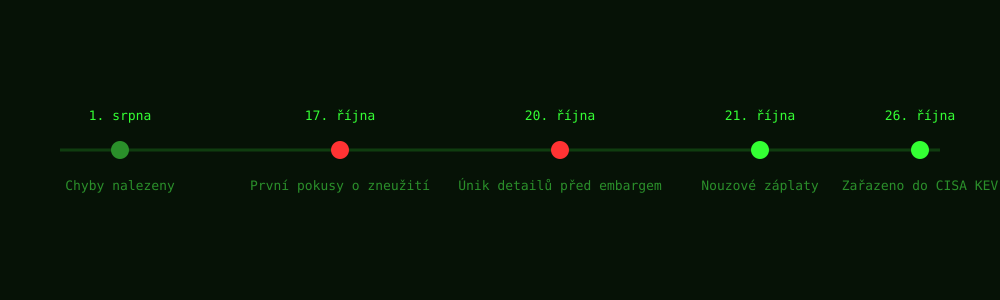

Zranitelnost
Obě chyby mají společný mechanismus: PHP se při fatální chybě ukončí pomocí longjmp()
a přeskočí část čisticí logiky. Zbylý poškozený stav pak může útočník zneužít.
| Parametr | CVE-2026-109618 | CVE-2026-109619 |
|---|---|---|
| Název | OOM poškození paměti | Zastaralý globální stav |
| CVSS v4.0 | 9.2 | 9.2 |
| Postižené verze | PHP 5.4 až 8.5 | PHP 5.4 až 8.5 |
| Nejzranitelnnější nasazení | Apache mod_php | Apache mod_php (persistentní workery) |
| Objevili | Ryan Austin (Calif, s pomocí modelu OpenAI) a bezpečnostní tým Wiz, nezávisle | |
Jak k tomu došlo
- CVE-2026-109618: Počítadlo položky v poli se zvýší dřív, než je pro ni alokovaná paměť. Pokud v tu chvíli dojde PHP paměť, zůstane po ukončení požadavku v halda poškozená hodnota, kterou lze interpretovat jako platná data a dostat se tak ke spuštění kódu.
- CVE-2026-109619: Globální proměnné sledující stav serializace a session si uchovávají ukazatel do paměti předchozího požadavku. U dlouhotrvajících PHP workerů (typicky Apache mod_php) ho další požadavek zneužije jako use-after-free.
Časová osa

log excerpt
[17. 10. 2026] AWS MadPot zachytil první pokusy o zneužití, čtyři dny před
veřejným oznámením.
[20. 10. 2026] Detaily zranitelnosti unikly na Hacker News ještě před
plánovaným embargem na 15:00 UTC.
[21. 10. 2026] PHP Foundation vydala nouzové záplaty: 8.2.35, 8.3.36,
8.4.27 a 8.5.12.
[26. 10. 2026] CISA zařadila obě CVE do katalogu Known Exploited
Vulnerabilities s termínem 29. 10. pro federální instituce v USA.
Nizozemský NCSC preventivně vypnul vlastní webové stránky, dokud nebyla nasazena záplata.